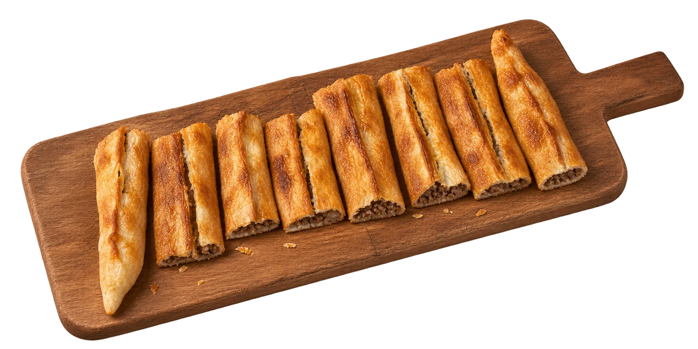
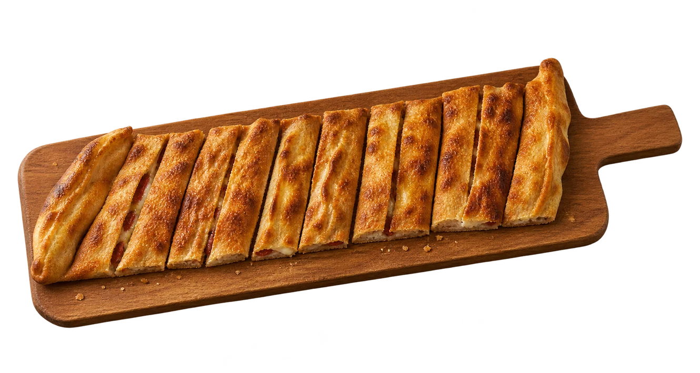
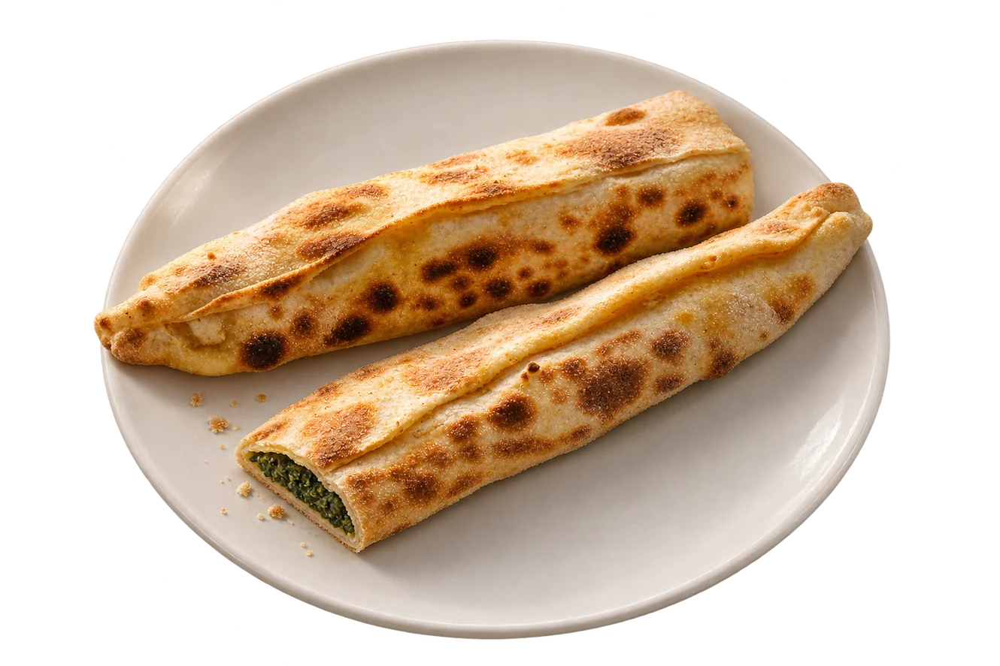
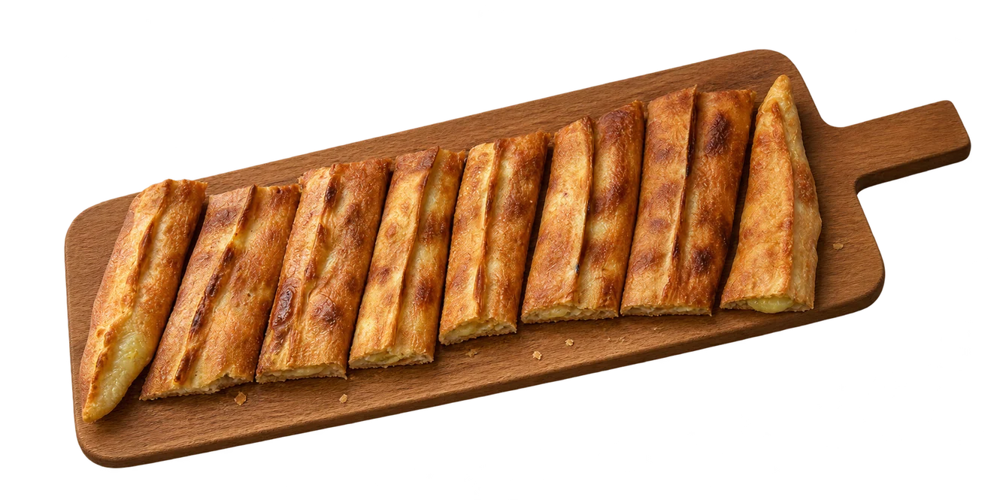
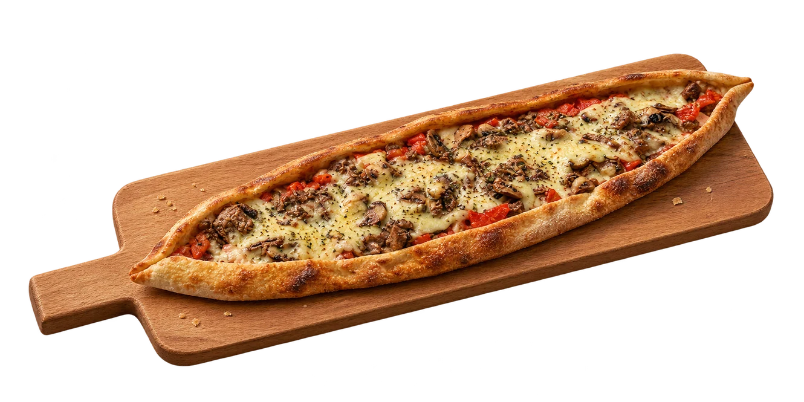
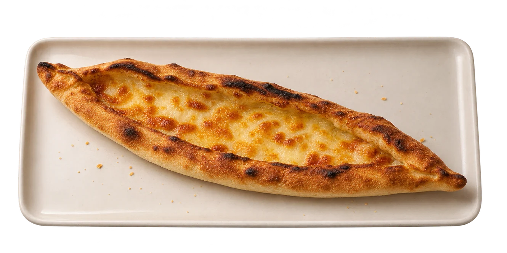

Karadeniz usulü · Beşiktaş
Fırından
sıcacık.
Kıymalı Bafra pidesi
İncecik, çıtır hamurun içinde kavrulmuş dana kıyma ve soğan.

Fırından çıkanlar
Kabuğundan
iç harcına.
Kıymalı Bafra pidesi
Bafra’nın klasiği
- Kavrulmuş dana kıyma
- Soğan
Kapalı ve açık pideler
Fırından altı pide.
Kapalı Bafra pidesi, ince ve gevrek hamuruyla dilim dilim servis edilir. Açık pidede harç, fırında üstü kızararak pişer.





✳ Türkali · İstanbul
Mısırlı Sokak’ta
buluşalım.
Türkali Mahallesi, Mısırlı Sokak No. 19/A34357 Beşiktaş, İstanbul
- Her gün
- –
- Telefon
- 0531 341 10 23

Türkali / Beşiktaş© OpenStreetMap